The 13D/21D/50D/200D ribbon on every Station chart now draws as one clean curve, and the fill follows it. Not one number changed: the averages, the sessions they belong to, and the labels at the right edge are exactly what they were. Nothing here is deployed; it sits on branch station/cloud-smooth-20260923, built from production de95670.
“I'd like a proposal for smoothening the steppy behaviour… I don't want to do it mathematically. Just visually.” · “I want clean curves, smooth as butter.” · Ruling: “I don't need it to be really exact, the history of the curves. What matters is that the current level in the labels is exact.” — Alan, 22 Sep
Y(value). Section 3 measures this on every captured pane.?steps=1 on a chart link does the same for a deep link. The lookback is now stated on the pane instead of hidden.Intraday is where the steps lived: one flat level per session and a diagonal to the next. Now a single curve.
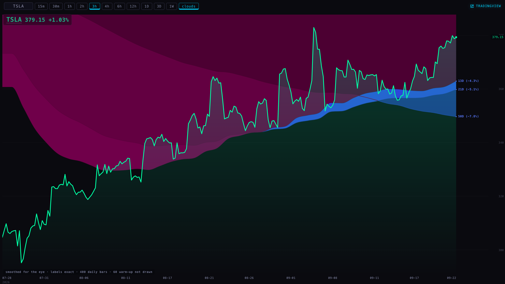
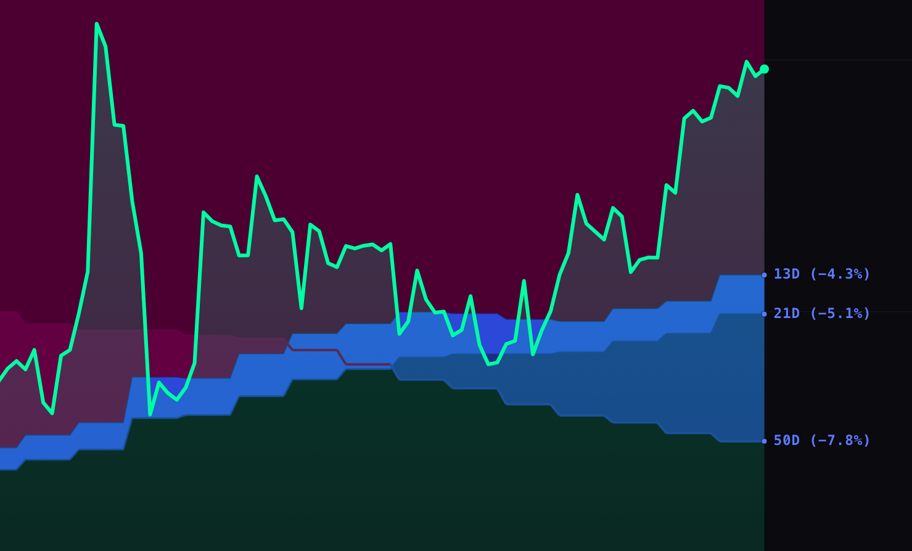
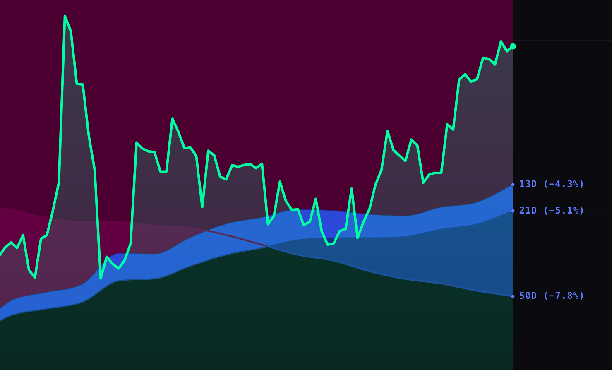
Pixels that changed between the two panes (caption box excluded): 0.783% · frame time before 0.85 ms → after 3.59 ms · labels after: 13D (−4.3%) · 21D (−5.1%) · 50D (−7.8%)
The tight 13D/21D pair and the pink stretch where 13 sat under 21 both follow the curve.
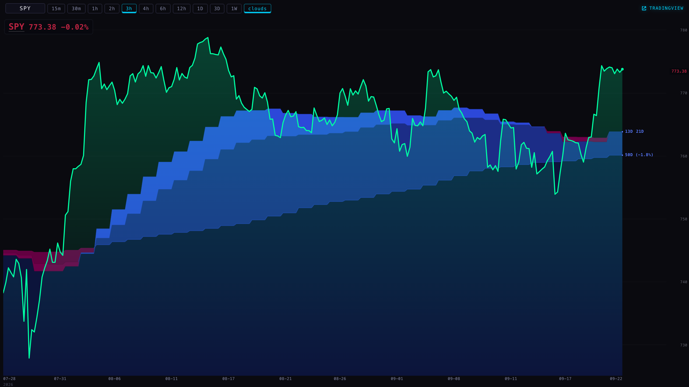
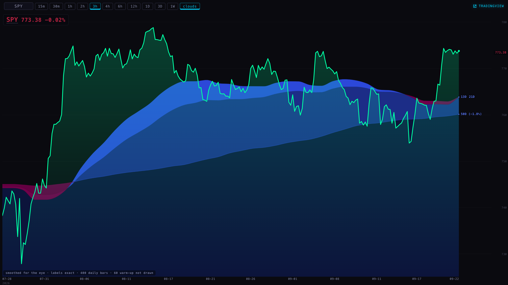
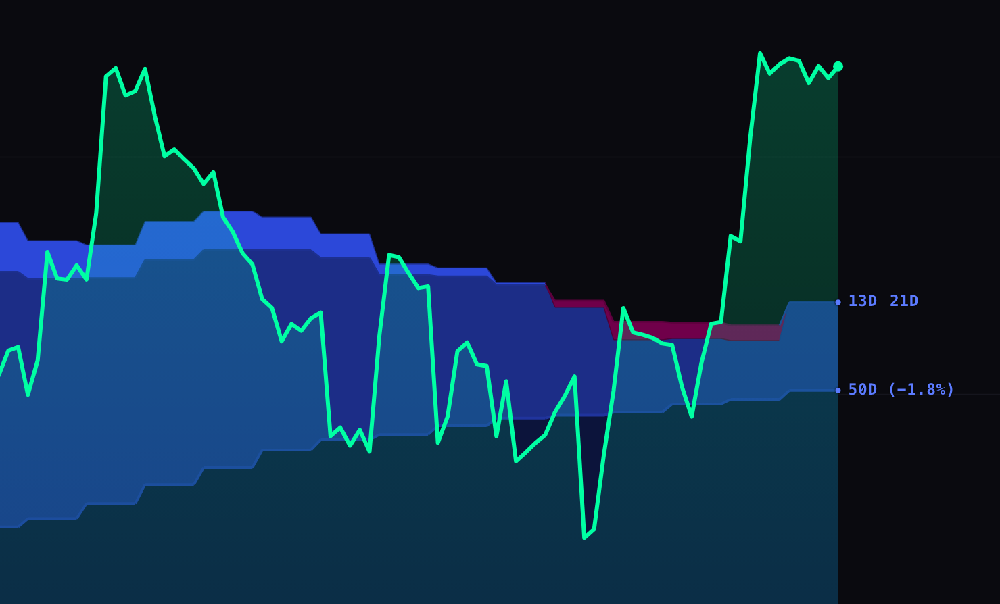
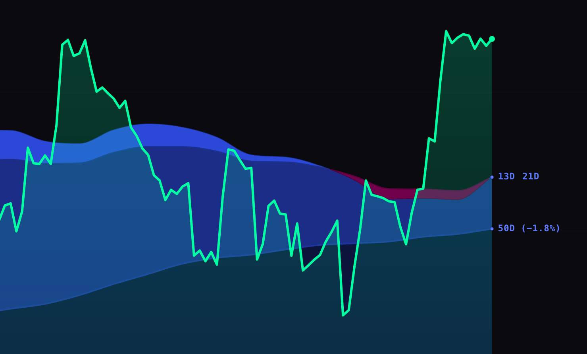
Pixels that changed between the two panes (caption box excluded): 1.089% · frame time before 0.55 ms → after 3.62 ms · labels after: 13D · 21D · 50D (−1.8%)
Honest note: on a daily pane every bar already had its own value, so at 240 bars the curve differs from the old straight joins by well under a pixel. The measured change below says so.
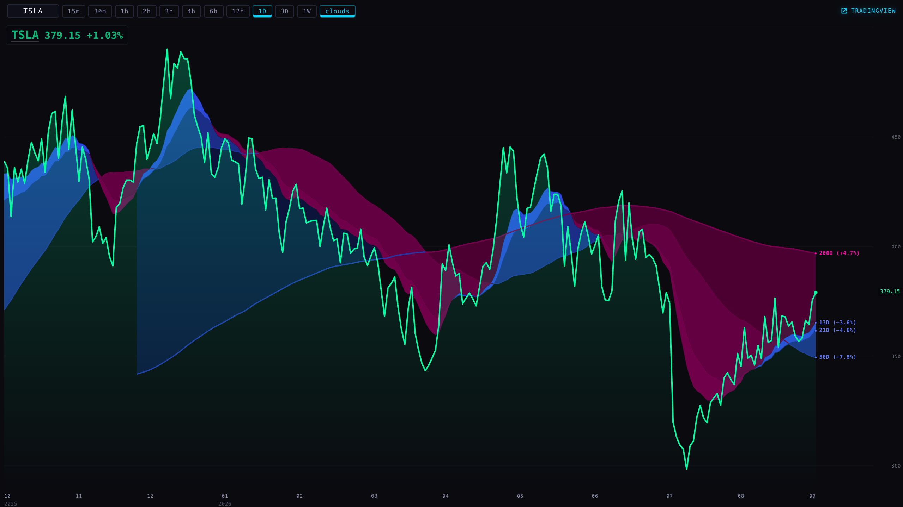
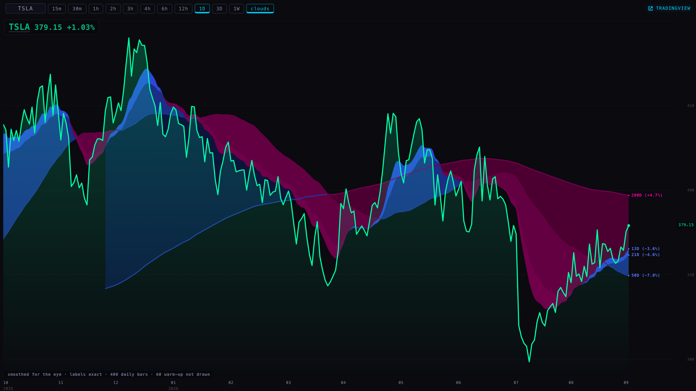
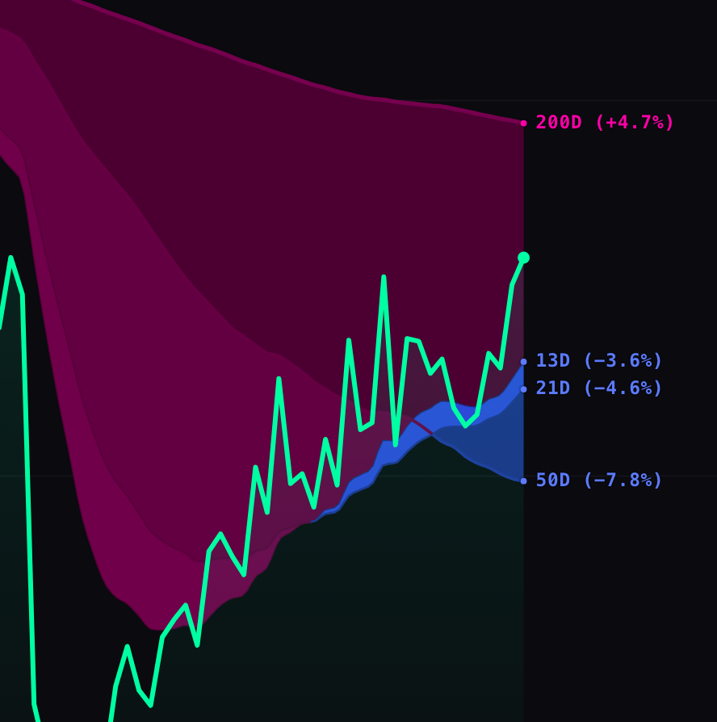
Pixels that changed between the two panes (caption box excluded): 0.021% · frame time before 1.15 ms → after 2.94 ms · labels after: 200D (+4.7%) · 13D (−3.6%) · 21D (−4.6%) · 50D (−7.8%)
Zoomed in, as a wheel or pinch would, the angular joints at each bar become a gentle curve.
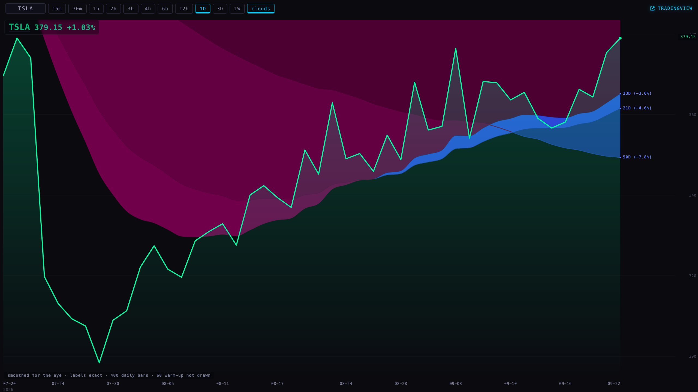
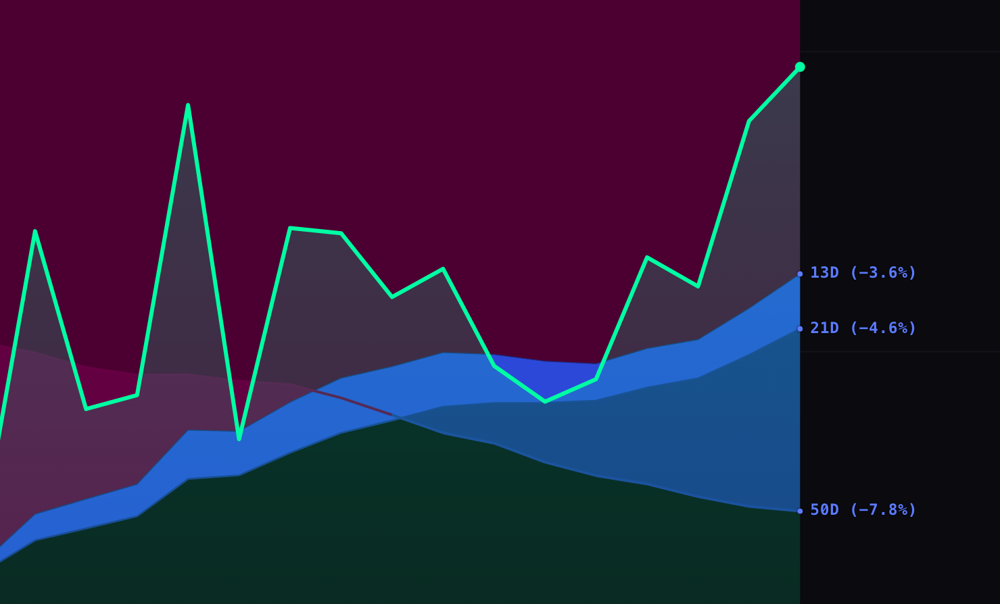
Pixels that changed between the two panes (caption box excluded): 0.063% · frame time before 0.43 ms → after 1.92 ms · labels after: 13D (−3.6%) · 21D (−4.6%) · 50D (−7.8%)
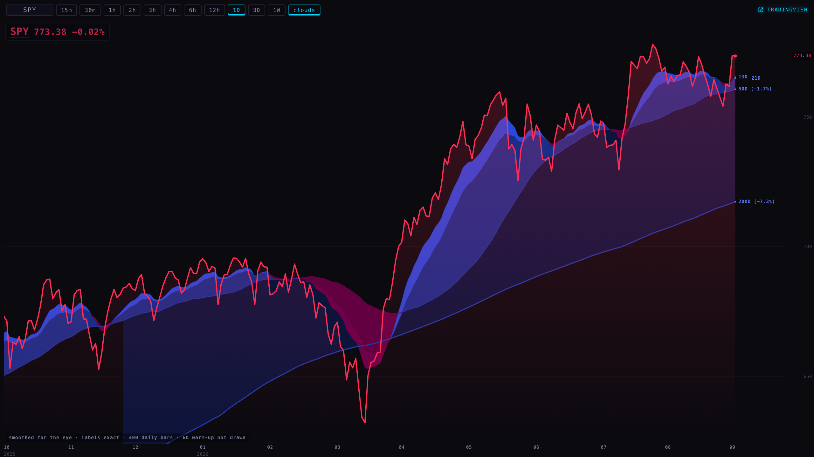
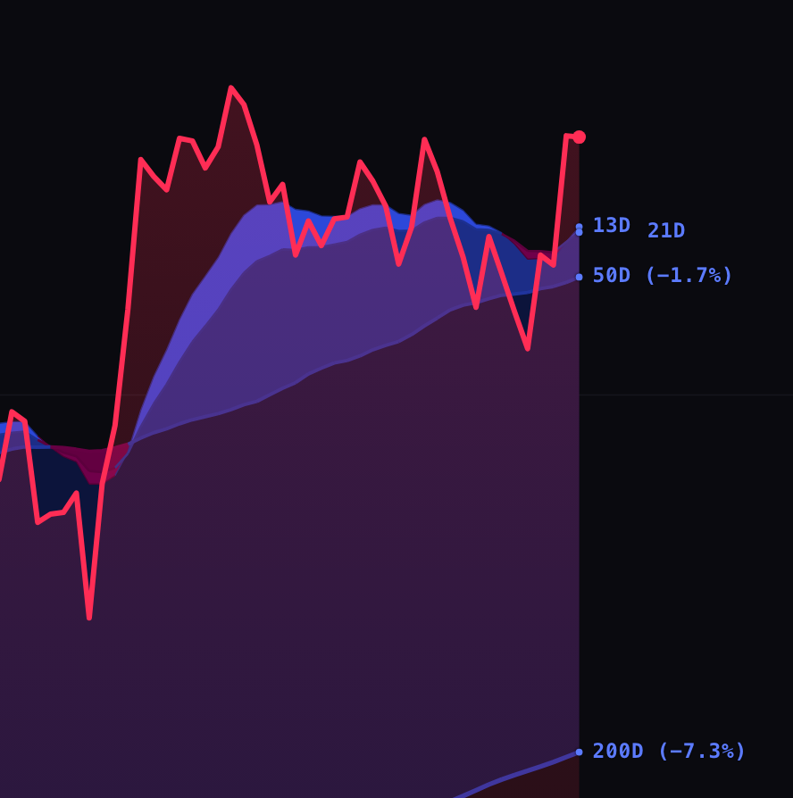
Pixels that changed between the two panes (caption box excluded): 0.019% · frame time before 1.23 ms → after 3.13 ms · labels after: 13D · 21D · 50D (−1.7%) · 200D (−7.3%)
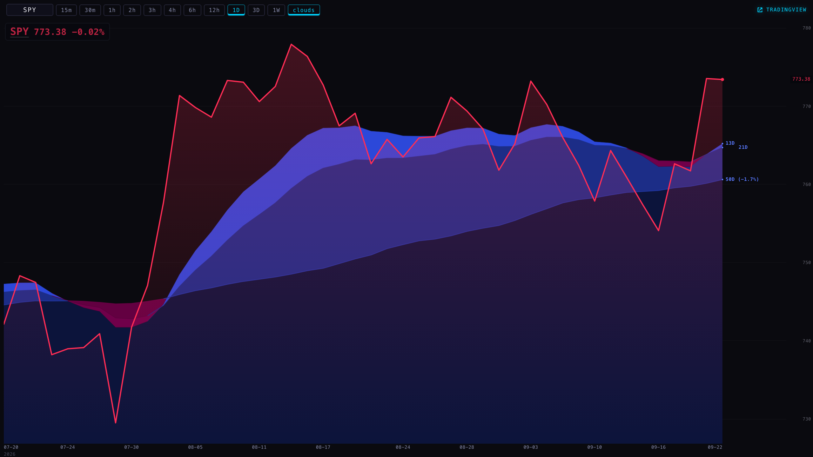
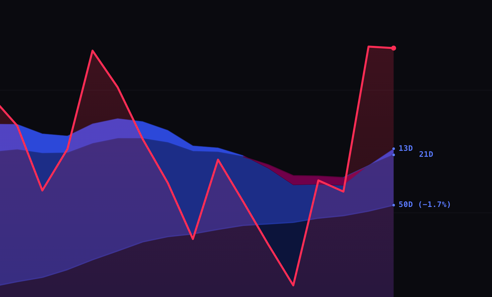
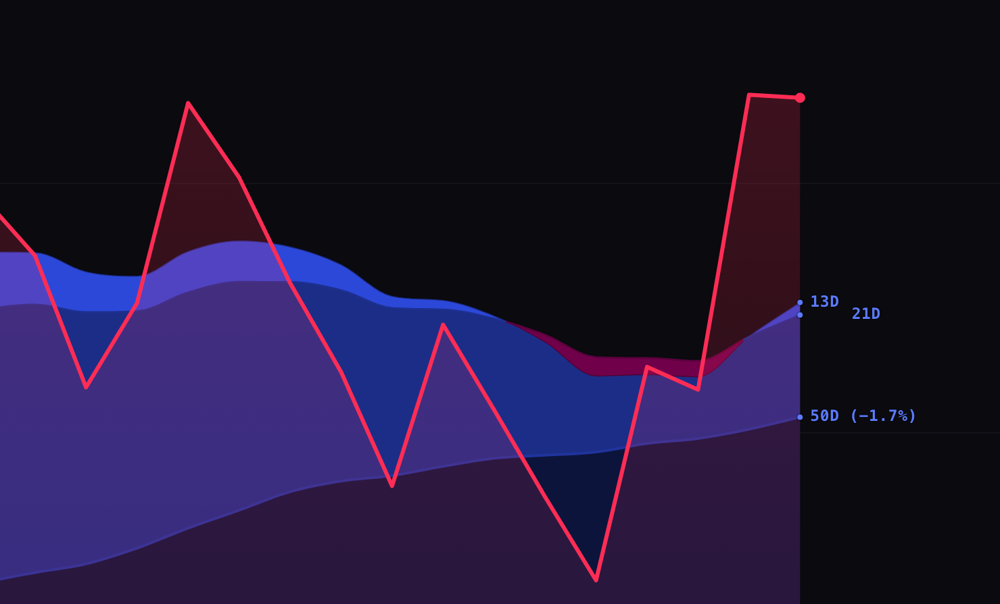
Pixels that changed between the two panes (caption box excluded): 0.088% · frame time before 0.42 ms → after 1.81 ms · labels after: 13D · 21D · 50D (−1.7%)
“Computed” is an independent run of _indicators/station-clouds.js in Node over the same 400 daily bars the pane received; “displayed” is what the pane placed (read from the host after the paint). The height check confirms each name sits at Y(value) of its exact value; the last column is the percentage the label prints, recomputed from the exact value and the last price.
| pane | label as shown | displayed value | computed value | value | height | distance from price (printed when there is room) |
|---|---|---|---|---|---|---|
| TSLA 3h last bar 2026-09-22T22:00:00.000Z · price 379.15 session shown 2026-09-21 | 13D (−4.3%) | 362.7955 | 362.7955 | identical to the bit | y = Y(value) exactly | −4.3% |
| 21D (−5.1%) | 359.6870 | 359.6870 | identical to the bit | y = Y(value) exactly | −5.1% | |
| 50D (−7.8%) | 349.5963 | 349.5963 | identical to the bit | y = Y(value) exactly | −7.8% | |
| TSLA 1D last bar 2026-09-22T04:00:00.000Z · price 378.9 session shown 2026-09-22 | 200D (+4.7%) | 396.7167 | 396.7167 | identical to the bit | y = Y(value) exactly | +4.7% |
| 13D (−3.6%) | 365.0961 | 365.0961 | identical to the bit | y = Y(value) exactly | −3.6% | |
| 21D (−4.6%) | 361.4336 | 361.4336 | identical to the bit | y = Y(value) exactly | −4.6% | |
| 50D (−7.8%) | 349.2791 | 349.2791 | identical to the bit | y = Y(value) exactly | −7.8% | |
| TSLA 1D-close last bar 2026-09-22T04:00:00.000Z · price 378.9 session shown 2026-09-22 | 13D (−3.6%) | 365.0961 | 365.0961 | identical to the bit | y = Y(value) exactly | −3.6% |
| 21D (−4.6%) | 361.4336 | 361.4336 | identical to the bit | y = Y(value) exactly | −4.6% | |
| 50D (−7.8%) | 349.2791 | 349.2791 | identical to the bit | y = Y(value) exactly | −7.8% | |
| SPY 3h last bar 2026-09-22T22:00:00.000Z · price 773.74 session shown 2026-09-21 | 13D | 763.8166 | 763.8166 | identical to the bit | y = Y(value) exactly | −1.3% · not printed: crowded, name only |
| 21D | 763.8093 | 763.8093 | identical to the bit | y = Y(value) exactly | −1.3% · not printed: crowded, name only | |
| 50D (−1.8%) | 760.1020 | 760.1020 | identical to the bit | y = Y(value) exactly | −1.8% | |
| SPY 1D last bar 2026-09-22T04:00:00.000Z · price 773.38 session shown 2026-09-22 | 13D | 765.1828 | 765.1828 | identical to the bit | y = Y(value) exactly | −1.1% · not printed: crowded, name only |
| 21D | 764.6794 | 764.6794 | identical to the bit | y = Y(value) exactly | −1.1% · not printed: crowded, name only | |
| 50D (−1.7%) | 760.5862 | 760.5862 | identical to the bit | y = Y(value) exactly | −1.7% | |
| 200D (−7.3%) | 717.1888 | 717.1888 | identical to the bit | y = Y(value) exactly | −7.3% | |
| SPY 1D-close last bar 2026-09-22T04:00:00.000Z · price 773.38 session shown 2026-09-22 | 13D | 765.1828 | 765.1828 | identical to the bit | y = Y(value) exactly | −1.1% · not printed: crowded, name only |
| 21D | 764.6794 | 764.6794 | identical to the bit | y = Y(value) exactly | −1.1% · not printed: crowded, name only | |
| 50D (−1.7%) | 760.5862 | 760.5862 | identical to the bit | y = Y(value) exactly | −1.7% |
Cross-check of the data itself: the 21 Sep 2026 row of the captured TSLA series computes to 13D 362.80 · 21D 359.69 · 50D 349.60 · 200D 397.06, the very numbers the existing suite pins from the deployed Cloud Workshop. Same provider, same arithmetic.
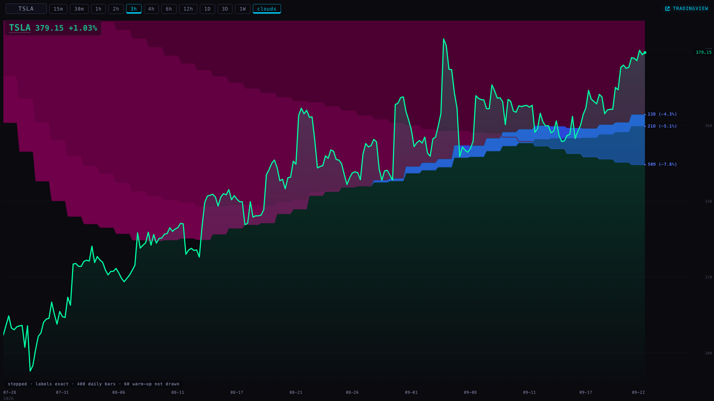
?steps=1 — the stepped drawing restored; caption reads “stepped · labels exact …” · differs from production by 0.012% of pixels (the axis ink, no longer near-white)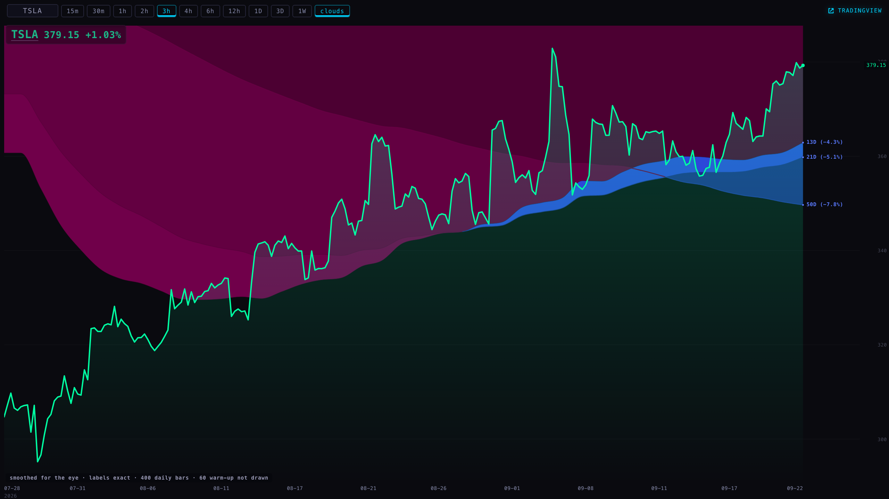
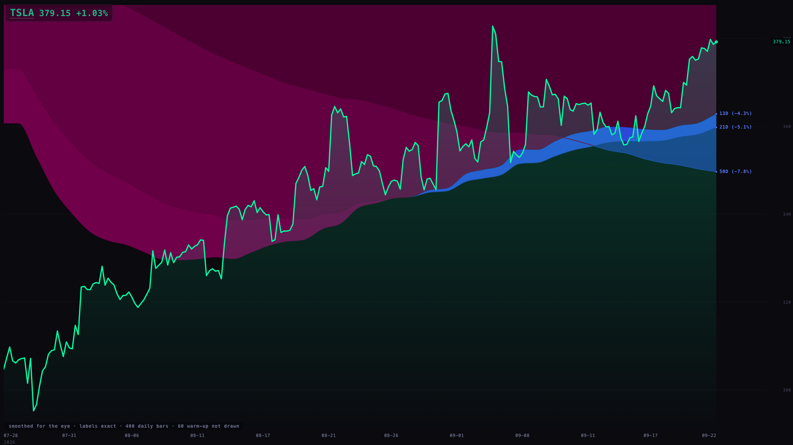
bare=1, the way the deck mounts a pane: no toolbar, caption present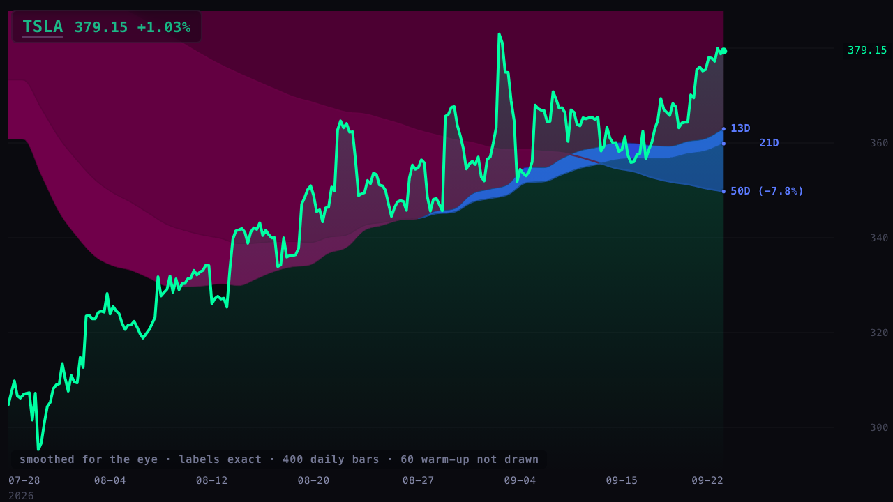
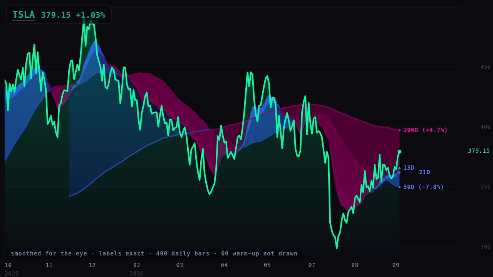
Every stroke, fill and text on chart/index.html and its byte-identical twin station-shells/chart-v1/index.html was searched for #C6C8DE, #F2F2F8, #fff and white-based rgba. Each use was replaced; the shared token declaration line stays (other pages read it) but nothing on the chart page uses --ink or --ink2 any more, and a test now fails if one comes back.
| where | was | now |
|---|---|---|
canvas palette chColors() | ink2: #C6C8DE | removed; all five uses below read dim #868AAA |
| price-axis tick numbers | #C6C8DE at 47% | dim |
| live-quote marker when the day's direction is unknown | #C6C8DE | dim |
| hover crosshair (two lines) | #C6C8DE at 62% | dim |
| hover price readout · hover time readout | #C6C8DE | dim |
| body text · ticker field · TradingView fallback title | --ink #F2F2F8 | --ink3 #9A9AB6 |
| range-button hover · TradingView modal close | --ink2 #C6C8DE | --ink3 |
| TradingView modal close, hover | #fff | the cyan accent already on its border |
| ticker underline · “observation time unknown” dotted line | rgba(255,255,255,.26) · rgba(198,200,222,.45) | dim rgba(134,138,170,…) |
| proposals page canvas text | #F2F2F8 | #9A9AB6 |
| the price line itself | already the palette dim when the day's baseline is unknown (production de95670); unchanged here | |
Findings outside the chart surfaces, not touched in this unit: 30-odd Station pages declare the same --ink:#F2F2F8; --ink2:#C6C8DE tokens; the deck uses --ink2 seven times and --ink four times for text; reflow/index.html fills with #C6C8DE; the two sector-rotation templates paint canvas text in #F2F2F8/#C6C8DE. They are listed so nothing is hidden, and they are Alan's call.
de95670 and the candidate worktree from the same static server the repository's browser proofs use. 1280×720 panes at 2× for the full shots, 3× for the corner zooms, 640×360 for the deck-size shots.candles-TSLA-180.json (240 bars), candles-TSLA-D.json (400 bars), candles-SPY-180.json (240 bars), candles-SPY-D.json (400 bars), quotes-TSLA.json (1 quote), quotes-SPY.json (1 quote), universe.json (364 symbols). Supabase reads were answered from the repository's fixture universe; the canonical tickers set was answered from the same real 364-symbol universe, so the ownership handshake verified exactly as it does live. WebSockets were blocked. No page error on any capture.tests/station-clouds.test.mjs 29/29 (23 existing + 6 new: exact anchors and no overshoot, one anchor per session, sampled rows keep the ribbon's rules, smooth default with ?steps=1, labels untouched, no near-white). Whole suite 373 tests, 353 pass; the 20 failures are the same 20 that fail on production de95670 — none new, none fixed.?steps=1 marks a. Its mode buttons remain labels, as before.Run scintilla-lane4-urth-20260922-221547 · Urth Claude Max · Fable 5.1 · every screenshot on this page was opened and looked at by the worker before a word was written about it.